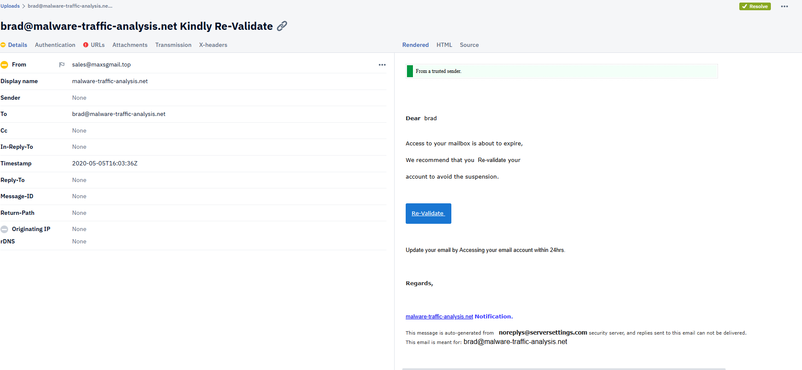
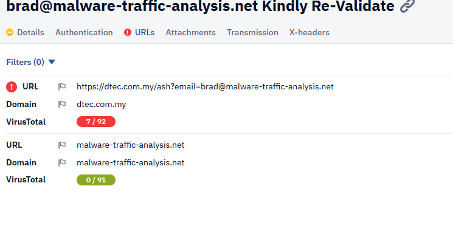
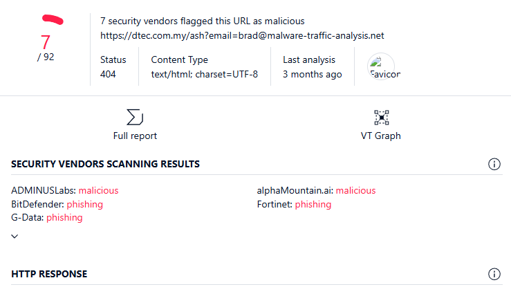
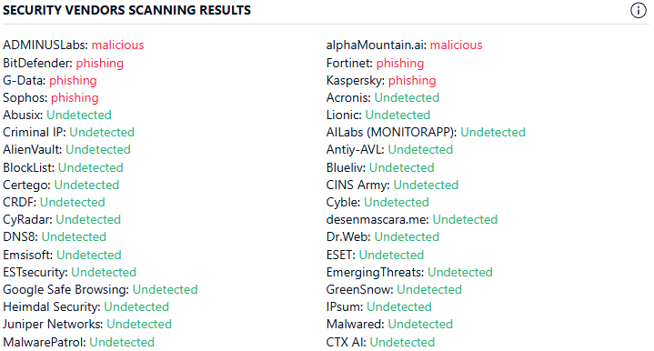
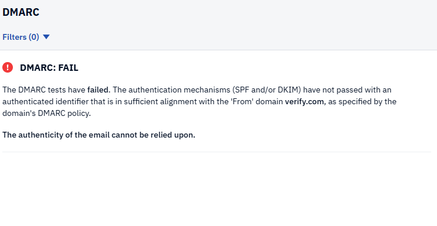
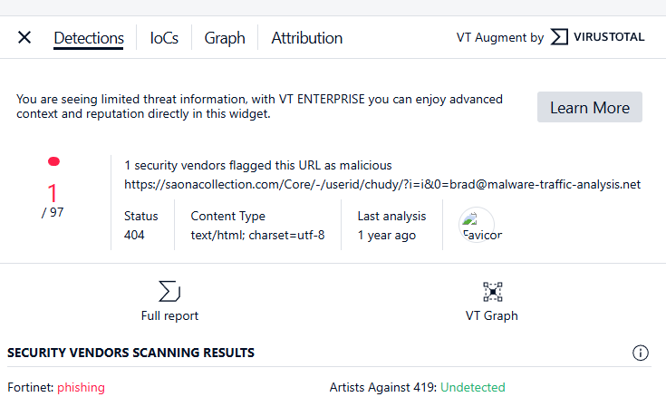
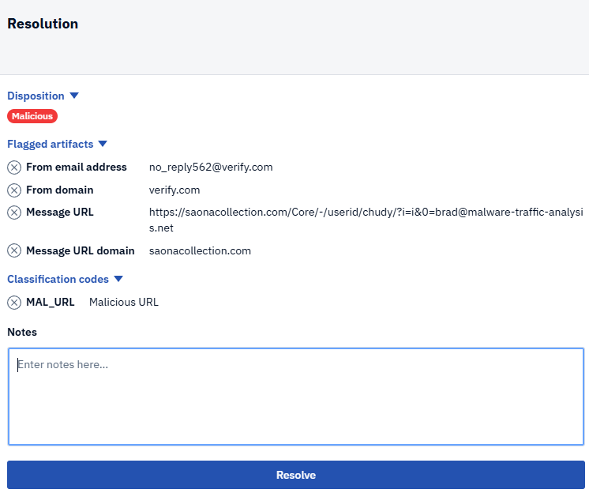
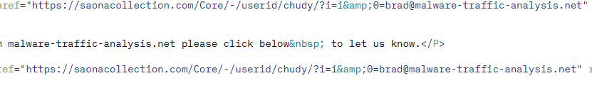

Introduction
I used Phishtool to analyze emails, both recieved from my own private email and known bad actor emails. Virustotal was also used to check URLs for malicious activity against records. Disclosure: email one and two come from a download from years prior, so the sites are unfortunately dead. they are for research purposes only.
Email one: sales@maxsgmail.top
There are a couple things that instantly flag this as suspcious. To begin with, the fromline uses a .top domain. .top is typically for top 10 sites, or marketing campagins.
However, due to their low costs it is quite often used for malicious phishing as well. Secondly, the display name is vastly different than the from line. Thirdly, the subject line implies urgency and asks us to click on a link given
When you dive into the URL and scan it using VirusTotal, it flags on seven different security vendors for phishing or malicious. For these four reasons we will flag this as malicious.

[the URL fails virustotal checks]
all checks come back malicious or phishing
while many come back clean, too many come back flagged for us to trust this.
email two: no_reply562@verify.com
Just like with the last email, this one has a from line and display name vastly different. this one uses a .com domain however. more trustworthy, but there are other things that discredit it. the DMARC test failed in Phishtool, which means the domain might not be trustworthy.
The email also implies urgency, and it even gives two options to click! confirm or deny: but both link to the same URL, and the URL is flagged by a security vendor for phishing. We will mark this as malicious as well.

only a single security vendor flagged this. it being down for over a year is probably why its gone unnoticed by others
there is two links, but only one url?
yes, both urls lead to the same link. As the point is to give you options when stealing your information.
Email three:
LLM prompt injection
GRC gap assesssment
IR playbook tabletop
disclosures
* * * ### Small image  ``` ``` ``` ```